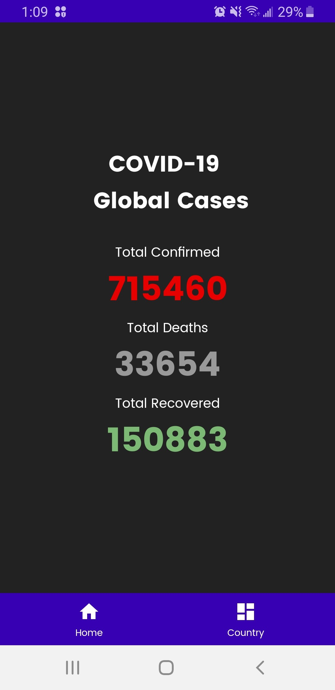
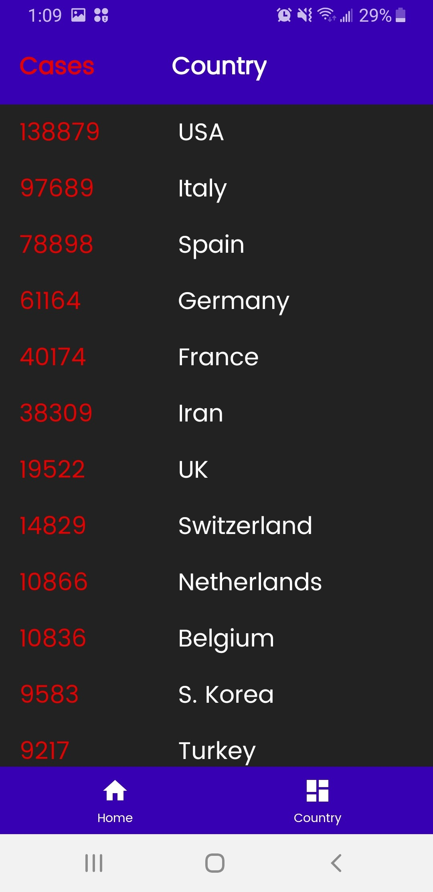

Dean Clancy
Student and Developer
Hello. Welcome to my website. My name is Dean and I am a second year Computing Science student at Thompson Rivers University, Kamloops. I am passionate about technology and learning, I love to make websites, and I am always open to learning new technologies and skills. When I am not being a computer nerd, I like to get out in nature and hike, bike, and camp.
Featured Projects
View selected projects below. Check out more project I am working on at GitHub.
COVID-19 Tracker App
This Android App displays the total confirmed cases so far, the total deaths, and the total number of people who have recovered. The App also displays the number of cases for each country.
More InfoHome Screen
The home screen displays total cases to date, total deaths, and the total numbre of people that have recovered.
Country Screen
The country screen shows a list of countries that have the virus and how many cases.

Bootstrap Apiaries
This is a website that I made for my Web Design and Development class. I searched for businesses in Kamloops, BC that didnt't have a website and found Bootstrap Apiaries, a local honey business and developed a website for them.
View project on GitHubThis is a dropdown section
More projects are on the way...
Work Experience
Technology Services Analyst
BC Wildfire Service
May 2020 - Present
My primary role as a Teaching Assistant is to be an assistant to the Web Design and Developement instructor.
Roles/Responsibilities
- Supporting the BC Wildfire operations Southeast Centre located in Castlegar, plus all deployments from this site.
- Providing tech support for both off the shelf technologies (e.g. Microsoft) and custom applications.
- Be responsive to needs of users in-house and on deployment.
- Ensure problems are solved or escalated to higher levels.
- Sample support issues: Build and deploy laptops. Troubleshoot printers. Resolve file access issues. Test and install new software applications. Write scripts to ensure efficient and accurate computer builds.
Teaching Assistant
Thompson Rivers University
Jan 2020 - May 2020
My primary role as a Teaching Assistant is to be an assistant to the Web Design and Developement instructor.
Roles/Responsibilities
- Marking and Grading
- Term Tests/Mid-term exams
- Written Assignments/Lab Assignments
- Final Exams
- Contact with supervisor
- Meetings/Email/Other Comunication
Education
Thompson Rivers University - Kamloops
Computing Science Diploma, 2019 - Present
The diploma emphasizes the application of computers to the solution of business-related problems. The academic training combines technical and computer skills with communication skills (written and oral) and business skills. A commitment to professionalism is an essential characteristic of the diploma.